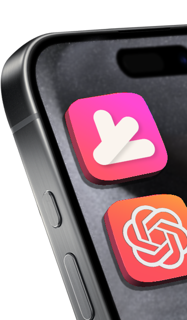
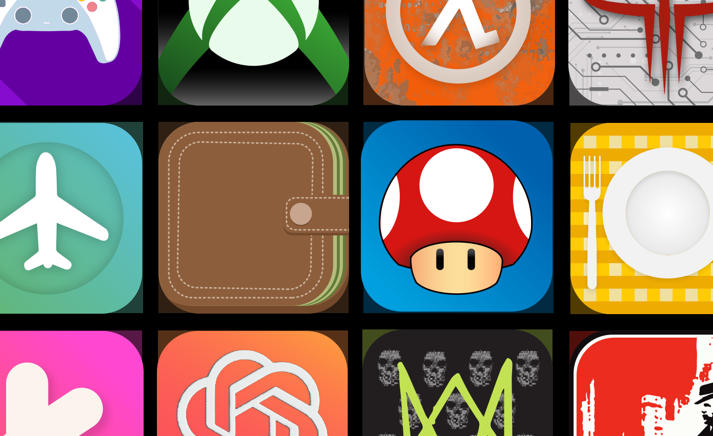
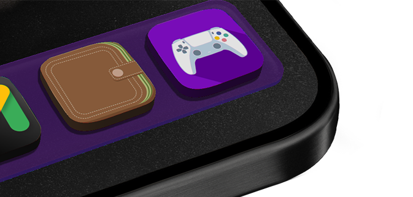
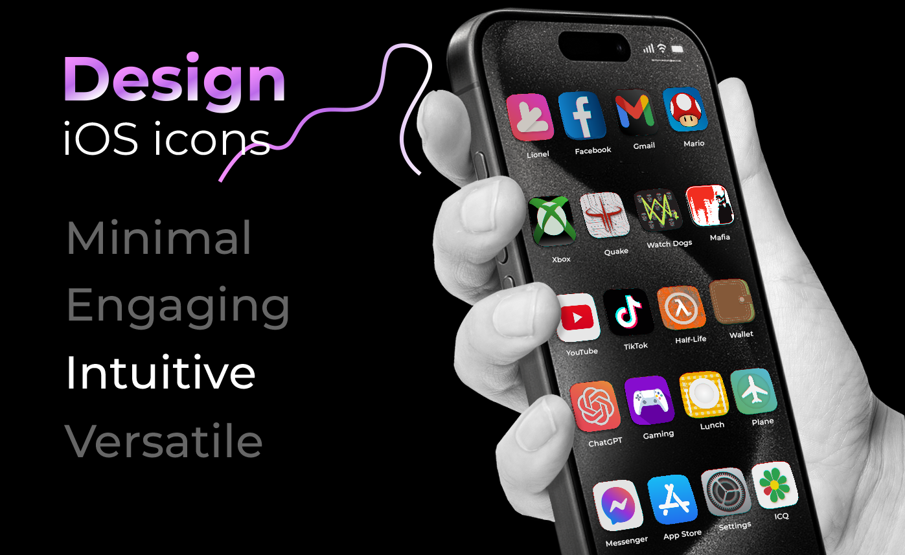
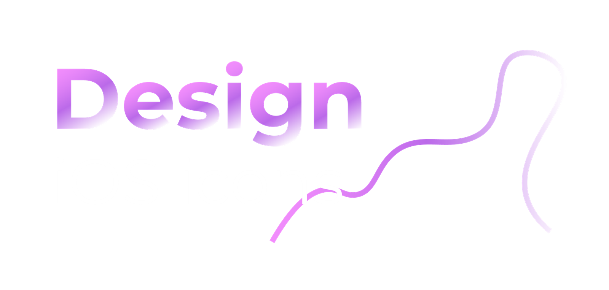

Your iOSjourney starts.
- Minimal
- Engaging
- Intuitive
- Versatile

Icon set
One system, many apps




01 / 05
In the hand
Minimal.Engaging.Intuitive.Versatile.



Prototype · images from bojidar.webflow.io/work/ui-ux-design